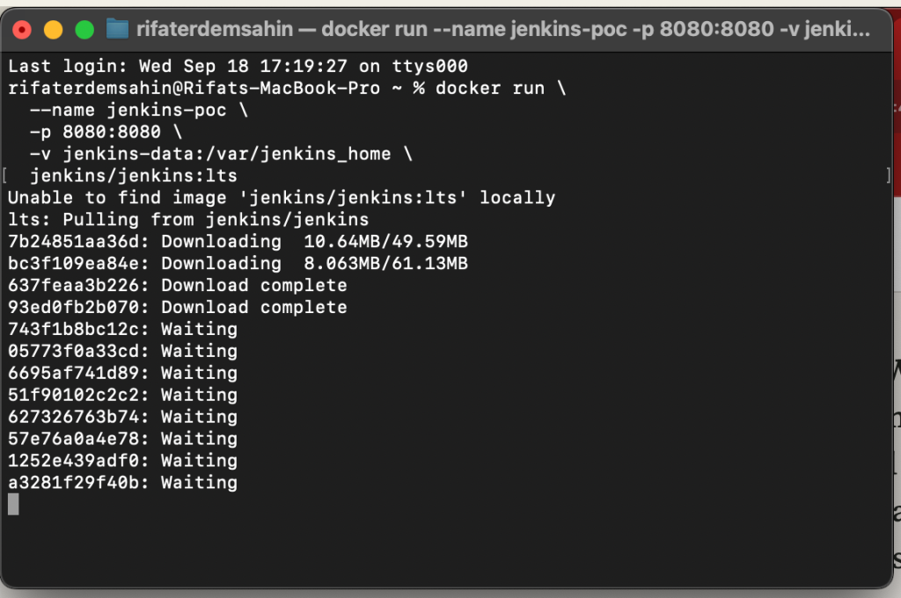

🚀 How to Run Multi-Line Docker Commands Like a Pro
Running multi-line commands in the terminal can significantly enhance the readability of complex commands. Here’s how you can split long Docker commands into multiple lines using the backslash (\).
💡 Why Multi-Line Commands?
Sometimes, Docker commands can get long, and it’s much easier to read and debug them when they're broken into multiple lines. The backslash (\) at the end of each line tells the terminal that the command is not yet finished.
Example: Running Jenkins in Docker 🐋
Here’s an example of how you can run a Jenkins instance in Docker with a multi-line command:
docker run \
--name jenkins-poc \
-p 8080:8080 \
-v jenkins-data:/var/jenkins_home \
jenkins/jenkins:lts

💡 Explanation:
-
docker run: Starts a new Docker container. -
--name jenkins-poc: Names the containerjenkins-poc. -
-p 8080:8080: Maps port 8080 from the container to the host, so you can access Jenkins vialocalhost:8080. -
-v jenkins-data:/var/jenkins_home: Mounts a volume to persist Jenkins data. -
jenkins/jenkins:lts: Pulls the latest long-term support (LTS) version of Jenkins.
💻 Running the Command
Just copy and paste the command into your terminal, and Docker will launch Jenkins for you! 🚀

📸
Make sure to pause after each step for clarity—this will help in identifying any issues. Here's an example of what the terminal looks like when running this command:
🔧 Pro Tips:
-
No Trailing Spaces! Make sure there are no spaces after the backslash (
\), or the command might break. -
For Scripting: If you’re using this in a shell script, the backslashes will make your commands clean and easy to edit later.
**🔗 **
The difference in how copy-pasting works between macOS Terminal and Windows PowerShell is primarily due to the way these operating systems and their terminal environments handle clipboard operations and input methods.
💻 macOS Terminal:
In macOS Terminal, the copy-paste mechanism is very straightforward:
-
Copy: You can simply use
Command + Cto copy text. -
Paste: To paste text into the terminal, use
Command + V, and it works smoothly because macOS Terminal handles this directly and has a more integrated clipboard system with the operating system.
💻 Windows PowerShell:
In Windows PowerShell, the behavior of copy-pasting can be a bit more complicated, depending on the version of PowerShell and its settings:
-
Copy: Use
Ctrl + Cor right-click to copy, but if you useCtrl + Cwhile in PowerShell, it may behave as a command to cancel the running process rather than copying text. -
Paste: To paste text, traditionally you had to right-click inside PowerShell (or use
Shift + Insert), butCtrl + Vmight not work by default.
Why the Difference?
-
Default Key Bindings:
-
On macOS, the terminal uses standard system-wide shortcuts like
Command + Vfor pasting. -
In older versions of PowerShell,
Ctrl + CandCtrl + Vwere reserved for interrupting processes and didn’t handle copy-paste operations by default. Newer versions of PowerShell (Windows 10 onwards) allowCtrl + Vfor pasting, but the experience can vary based on your version and settings. -
Right-Click Behavior:
-
macOS: Right-click brings up a context menu that lets you copy/paste easily.
-
Windows PowerShell: By default, right-click pastes the content into the terminal. This can be confusing, as right-clicking typically opens a menu in most other Windows apps.
-
Clipboard Interaction:
-
macOS Terminal has better integration with the system clipboard.
-
PowerShell's interaction with the clipboard can feel less intuitive, particularly in older versions, where right-click pasting was the norm, and key combinations like
Ctrl + Vwere not enabled by default.
How to Fix It in PowerShell 🚀
If you're using an older version of PowerShell, you can enable better copy-pasting with a few adjustments:
-
Enable Ctrl + V for pasting:
-
Right-click the title bar of PowerShell.
-
Select Properties.
-
Check the option "Enable Ctrl key shortcuts".
-
Use Windows Terminal:
-
The new Windows Terminal app, which you can download from the Microsoft Store, fully supports
Ctrl + Cfor copy andCtrl + Vfor paste, offering a much smoother experience.
By using these tips, you can make copy-paste behavior more consistent across different environments!
Let me know if you need more details on setting this up! 😊
🔗 Connect with me:
-
💼 LinkedIn: https://www.linkedin.com/in/rifaterdemsahin/
-
🐦 Twitter: https://x.com/rifaterdemsahin
-
🎥 YouTube: https://www.youtube.com/@RifatErdemSahin
-
💻 GitHub: https://github.com/rifaterdemsahin
Imported from rifaterdemsahin.com · 2025